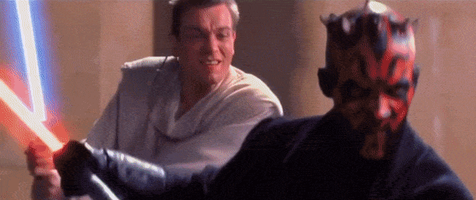
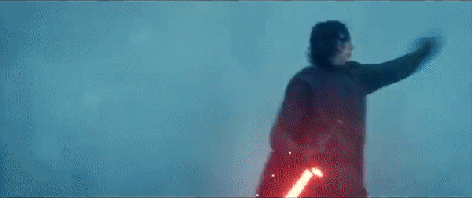

gcscope.com
OBI-WAN IS THE BEST JEDI.
LIGHTSABER FIGHTS
AND WHY THEY SUCK NOW...
Okay, most people by now can agree with me that Lightsaber Fights, are horrible in the sequel films and Disney+ shows.
Seriously, if you've seen the sequel films you'll notice that the lightsabers itself look great, but the fight scenes suck.
Take a look at these fight scenes, ones from The Phantom Menace (1999) and the other from The Rise of Skywalker (2019).


(The Phantom Menace, a 24 year old film, is the one on the left. You know it's better.)
The Phantom Menace saber scenes are pretty much cinematic perfetion, but Episode 9's..
Both Kylo and Rey's faces are completly open the entire time and they use the force more then their lightsabers. It's called a Lightsaber Fight, not a Force Fight.
I find it hard to believe that a film that was released in 2019, has horrible fight scenes compared to a film released DECADES before.
But The Rise of Skywalker isn't the only example of bad saber fights, some scenes from the Ashoka show had me go "Seriously? They're still that bad?"
But I don't blame Lucasfilm, or even George Lucas (despite his.. "controversial" changes,) I blame Disney.
Ever since Disney bought Lucasfilm, Their reboots have been complete garbage. The visuals look great sure, but the films in general are horrible. Especially Episode 9.
The plot dosen't make sense, The characters (The new ones, not the ones from the original trilogy) aren't the best, and the Jedi they chose was a horrible pick.
I still don't know why they would make Rey "a Palpatine" and tell us TWO movies later!
Ok back to the topic, All in all, I hope Disney learns from their mistakes and hopefully focus on the quality of the fight scenes, over the quality of the lightsaber.
But at least the prequels exist so we can look back and remember how good the lightsaber fights used to be.
WRITTEN IN 2023.
Rant ranted by Giancarlo Scopazzi.